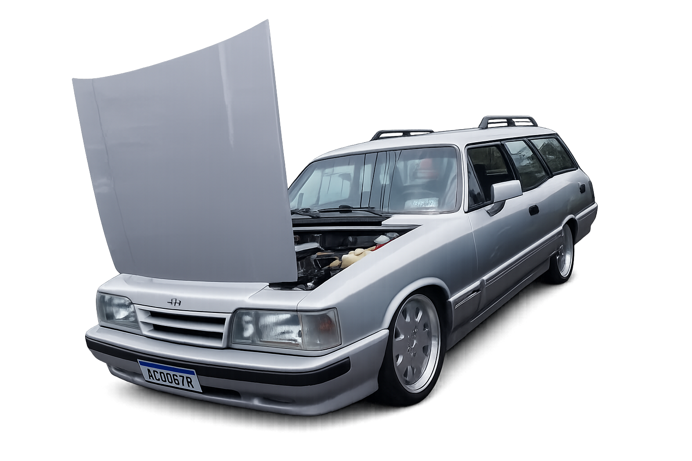
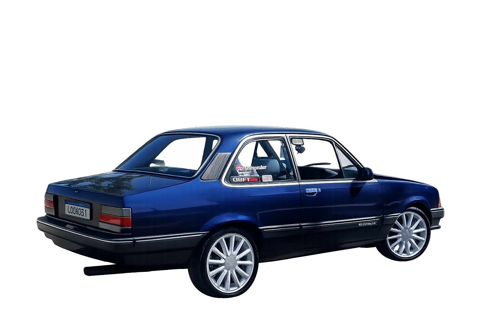
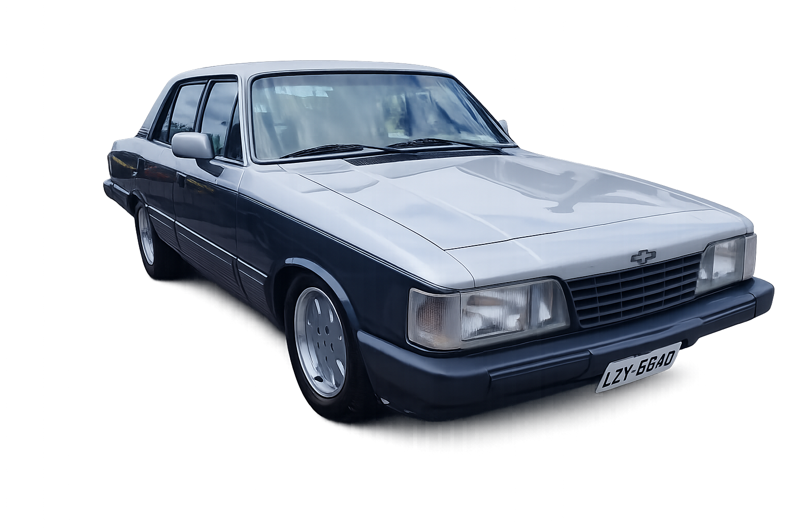
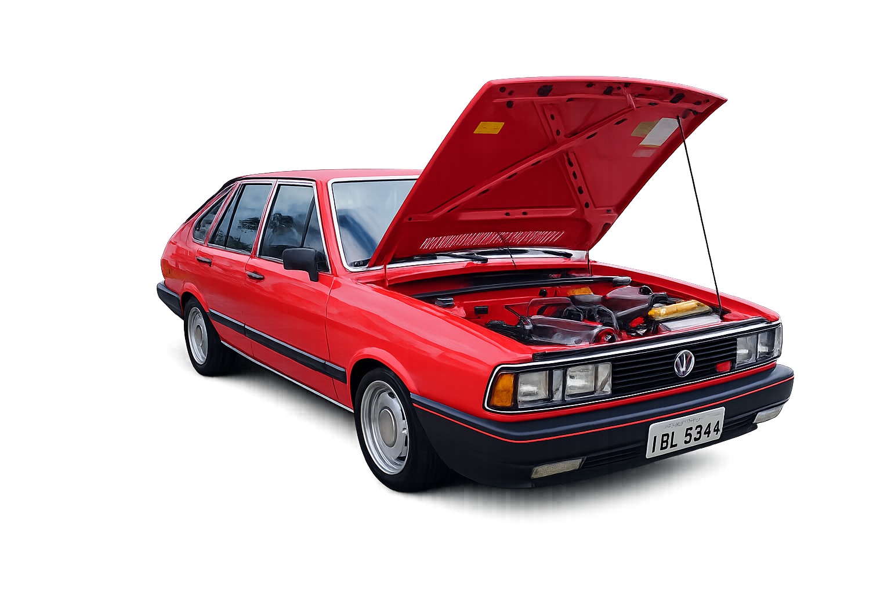
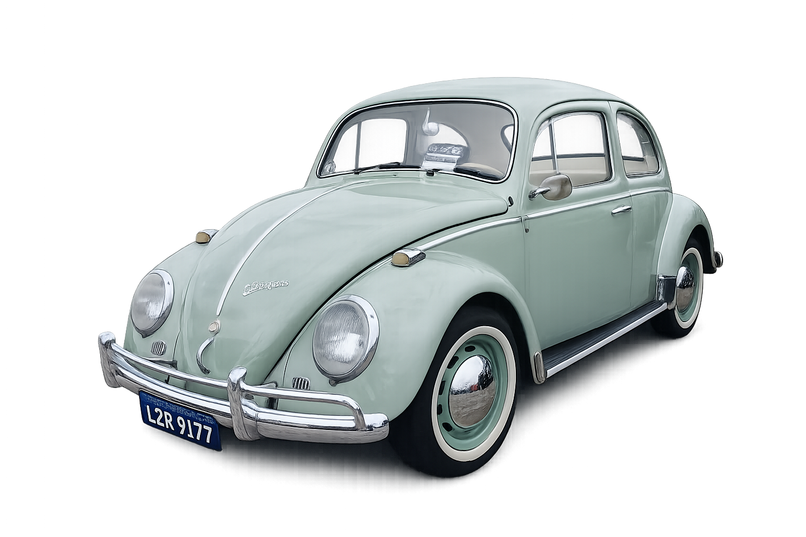

Omega 4.1 1995 CD

Modelo: Chevrolet Omega CD
Sedan 4 portas
Motor: 6 cilindros em linha 4.1
168 cv
Tração: traseira
Manual de 5 marchas
Velocidade máxima: ~212–215 km/h
0–100 km/h: ~9,5–10,5 s
Consumo cidade: ~5,8–6 km/l
Consumo estrada: ~9–9,7 km/l
Tanque: ~75 litros
Comprimento: ~4.738 mm
Largura: ~1.760 mm
Entre-eixos: ~2.730 mm
Direção hidráulica
Peso: ~1.449–1.469 kg
Ar-condicionado automático digital
Vidros elétricos nas 4 portas
Trava elétrica das portas
Retrovisores elétricos
Caravan Comodoro 1990

Modelo: Chevrolet Caravan Comodoro 1990
Perua 2 portas
Motor: 6 cilindros em linha 4.1
Potência: 168 cv
Tração: Traseira
Manual 5 marchas
Velocidade máxima: ~210–215 km/h
0–100 km/h: ~9,5–10,5 s
Consumo cidade: ~5,5–6 km/l
Consumo estrada: ~8,5–9,5 km/l
Tanque: 75 litros
Comprimento: ~4.745 mm
Largura: ~1.760 mm
Entre-eixos: ~2.730 mm
Peso: ~1.500–1.550 kg
Direção hidráulica
Desembaçador traseiro
Porta-malas: 540 litros
Omega Suprema CD 4.1

Chevrolet Omega Suprema CD
Motor: 6 cilindros em linha 4.1
168 cv
Tração: traseira
Câmbio: manual de 5 marchas ou automático de 4 marchas
Velocidade máxima: ~195–220 km/h
0–100 km/h: ~8,5–11 s
Consumo cidade: ~6–8 km/l
Consumo estrada: ~9–12 km/l
Tanque: 65 litros
Comprimento: ~4.780 mm
Largura: ~1.770 mm
Altura: ~1.440 mm
Entre-eixos: ~2.730 mm
Peso: ~1.350–1.550 kg
Direção hidráulica
Freios a disco na dianteira
Chevette SL/E 1990

Modelo: Chevrolet Chevette
Carroceria: Sedan 2 portas
Motor: 4 cilindros em linha 1.6
Potência: 80 cv
Torque: 12 kgfm
Tração: traseira
Câmbio: 5 marchas
Velocidade máxima: ~150–165 km/h
0–100 km/h: ~14–17 s
Consumo cidade: ~8–10 km/l
Consumo estrada: ~11–14 km/l
Tanque: 50 litros
Comprimento: ~4.120 mm
Largura: ~1.570 mm
Altura: ~1.340 mm
Entre-eixos: ~2.390 mm
Peso: ~900–980 kg
Freios a disco na dianteira
Direção mecânica
Porta-malas ~300 litros
Opala Comodoro 1992

Chevrolet Opala Comodoro
6 cilindros 4.1 (Gasolina)
Motor: 4.1L, 6 em linha, carburado
Potência: ~135–140 cv
Torque: ~29 kgfm
Tração: traseira
Câmbio: manual 4/5 marchas
Comprimento: 4.69 m
Largura: 1.75 m
Entre-eixos: 2.66 m
Peso: ~1.300 kg (varia versão)
Bancos em veludo
Encosto de cabeça traseiro
Direção hidráulica
Painel com acabamento imitando madeira
Rodas esportivas aro 14
0–100 km/h: ~11 segundos
Velocidade máxima: ~180 km/h
Cidade: 5–7 km/l
Estrada: 8–10 km/l
Passt LS 1980

Volkswagen Passat
1.8 AP
4 cilindros, 8v, carburado
Potência: ~92–99 cv
Torque: ~15 kgfm
Tração: dianteira
Câmbio: manual 4 ou 5 marchas
Freios: disco dianteiro / tambor traseiro
Comprimento: ~4,19 m
Entre-eixos: 2,47 m
Peso: ~950–1.050 kg
Porta-malas: ~450 litros
Bancos esportivos (TS)
Conta-giros no painel
Console central
Direção mecânica (hidráulica em alguns casos)
0–100 km/h: ~10–11 segundos
Velocidade máxima: ~175–185 km/h
Cidade: 6–8 km/l
Estrada: 10–12 km/l
Fusca 1500 1970

Volkswagen Fusca 1500
Motor: 4 cilindros boxer
Cilindrada: 1.493 cm³
Potência: ~52 cv
Torque: ~10,5 kgfm
Tração: traseira
Câmbio: manual 4 marchas
Arrefecimento: a ar
Velocidade máxima: ~135km/h
0–100 km/h: ~23–25 segundos
Consumo cidade: ~8–10 km/l
Consumo estrada: ~11–13 km/l
Comprimento: ~4,07 m
Largura: ~1,55 m
Altura: ~1,50 m
Entre-eixos: 2,40 m
Peso: ~800–850 kg
Porta-malas dianteiro: ~140 litros
Bancos simples em vinil
Painel metálico pintado
Direção mecânica
Ventilação por alavancas no painel
Desembaçador traseiro (alguns modelos)